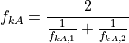
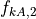

v0.2.1 - Fourier’s Fable (February, 7 2020)¶
New Features¶
Back end modifications in order to improve calculation speed. For the results see (PR #147).
Documentation¶
Parameter renaming¶
Testing¶
Improve the heat pump test (PR #150).
Bug fixes¶
Prevent pandas 1.0.0 installation due to bug in the
to_csv()method (bug will be fixed in PR #31513 of pandas). Additionally,the version requirements of third party packages have been updated to prevent future bugs resulting from possible API changes (PR #146).There was a bug in the heat exchanger kA-functions (
tespy.components.heat_exchangers.simple.kA_func(),tespy.components.heat_exchangers.base.kA_func()andtespy.components.heat_exchangers.condenser.kA_func()). The factors for the heat transfer coefficient should not simultaneously amplify the value but instead with their inverse.
For simple heat exchangers,

will be equal to 1 (PR #150).
Other changes¶
Replacing some of the characteristic lines by generic ones. The simulation results using the default lines might slightly differ from the results using the original defaults (PR #149).
Contributors¶
Francesco Witte (@fwitte)
@maltefritz